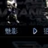

有一定速度與基礎攻擊力，可使用照明彈擴大友軍視野。
| 名稱 | 技術等級 | 能量消耗 | 說明 |
|---|---|---|---|
| 星殼 | 28 | 40 KJ | 照明彈 |
| 閃爍星殼 | 50 | 60 KJ | 照明彈 |
| 月亮殼 | 76 | 80 KJ | 照明彈 |
| 彗星殼 | 97 | 80 KJ | 照明彈 |
照明彈可照亮黑暗區域。後期追加：Phantom 視野內的偽裝／隱形單位會短暫可見。
| 名稱 | 技術等級 | 攻擊力 | 射程 | 射速 | 攻擊模式 |
|---|---|---|---|---|---|
| Light Rifle | 1 | 20 | 12.5m | 0.6s | 地空 |
| Laser Rifle | 11 | 35 | 13.5m | 1.3s | 地空 |
| Plasma Gun | 81 | 112 | 13.5m | 1.5s | 地空 |
| Ultra Plasma Gun | 129 | 148 | 14.6m | 1.5s | 地空 |
資料來源：Ever☆Zone Tistory /116